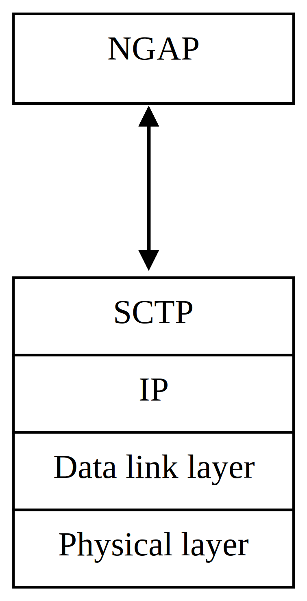

3GPP TS 38.410 V17.1.0 (2022-06)
Technical Specification
3rd Generation Partnership Project;
Technical Specification Group Radio Access Network;
NG-RAN;
NG general aspects and principles
(Release 17)
The present document has been developed within the 3rd Generation
Partnership Project (3GPP TM) and may be further elaborated
for the purposes of 3GPP..
The present document has not been subject to any approval process by the
3GPP Organizational Partners and shall not be implemented.
This Specification is provided for future development work within 3GPP
only. The Organizational Partners accept no liability for any use of
this Specification.
Specifications and Reports for implementation of the 3GPP TM
system should be obtained via the 3GPP Organizational Partners'
Publications Offices.
3GPP
Postal address
3GPP support office address
650 Route des Lucioles - Sophia Antipolis
Valbonne - FRANCE
Tel.: +33 4 92 94 42 00 Fax: +33 4 93 65 47 16
Internet
http://www.3gpp.org
Copyright Notification
No part may be reproduced except as authorized by written
permission.
The copyright and the foregoing restriction extend to reproduction in
all media.
© 2022, 3GPP Organizational Partners (ARIB, ATIS, CCSA, ETSI, TSDSI, TTA, TTC).
All rights reserved.
UMTS™ is a Trade Mark of ETSI registered for the benefit of its members
3GPP™ is a Trade Mark of ETSI registered for the benefit of its
Members and of the 3GPP Organizational Partners
LTE™ is a Trade Mark of ETSI registered for the benefit of its Members
and of the 3GPP Organizational Partners
GSM® and the GSM logo are registered and owned by the GSM Association
Foreword 5
1 Scope 5
2 References 5
3 Definitions and abbreviations 6
3.1 Definitions 6
3.2 Abbreviations 6
4 General aspects 6
4.1 NG Architecture 6
4.2 NG interface general principles 7
4.3 NG interface specification objectives 7
4.4 NG interface capabilities 7
5 Functions of the NG interface 7
5.1 General 7
5.2 Paging function 8
5.3 UE Context Management function 8
5.4 Mobility Management function 8
5.5 PDU Session Management function 8
5.6 NAS Transport function 8
5.7 NAS Node Selection function 8
5.8 NG Interface Management function 8
5.9 Warning Message Transmission function 9
5.10 Configuration Transfer function 9
5.11 Trace function 9
5.12 AMF Management function 9
5.13 Multiple TNL Associations Support Function 9
5.14 AMF Load Balancing function 9
5.15 Location Reporting function 9
5.16 AMF Re-allocation function 9
5.17 UE Radio Capability Management function 9
5.18 NRPPa Signaling Transport function 9
5.19 Overload Control function 10
5.20 Report of Secondary RAT data volumes Function 10
5.21 RIM Information Transfer function 10
5.22 Retrieve UE Information function 10
5.23 RAN CP Relocation Indication function 10
5.24 Suspend-Resume function 10
5.25 Connection Establishment Indication Function 10
5.26 AMF CP Relocation Indication Function 10
5.27 NR MBS Session Management function 10
5.28 Multicast Group Paging Function 11
5.29 QMC support function 11
6 Signalling procedures of the NG interface 11
6.1 PDU Session Management Procedures 11
6.2 UE Context Management Procedures 11
6.3 NAS transport procedures 11
6.4 UE Mobility Management Procedures 12
6.5 Paging procedure 12
6.6 AMF Management procedures 12
6.7 NG Interface Management procedures 12
6.8 Warning message transmission procedures 12
6.9 Location Reporting procedures 13
6.10 UE Radio Capability Management procedures 13
6.11 UE Tracing procedures 13
6.12 NR Positioning Protocol A (NRPPa) procedures 13
6.13 Overload Control procedures 13
6.14 Configuration Transfer procedures 13
6.15 Secondary RAT Data Usage Report procedure 14
6.16 RIM Information Transfer procedures 14
6.17 Retrieve UE Information procedures 14
6.18 RAN CP Relocation Indication procedures 14
6.19 UE Context Suspend procedure 14
6.20 Connection Establishment Indication procedure 14
6.21 AMF CP Relocation Indication procedure 14
6.22 UE Context Resume procedure 15
6.23 NR MBS Session Management Procedures 15
6.24 Multicast Group Paging Procedures 15
6.25 The procedures for supporting QMC 15
7 NG interface protocol structure 15
7.1 NG Control Plane 15
7.2 NG User Plane 16
8 Other NG interface specifications 16
8.1 NG-RAN NG interface: NG layer 1 (TS 38.411) 16
8.2 NG-RAN NG interface: NG signalling transport (TS 38.412) 16
8.3 NG-RAN NG interface: NG application protocol (NGAP) (TS 38.413) 17
8.4 NG-RAN NG interface: NG data transport (TS 38.414) 17
8.5 NG-RAN NG interface: NG PDU Session user plane protocol (TS 38.415) 17
Annex A (informative): Change history 18
This Technical Specification has been produced by the 3rd Generation Partnership Project (3GPP).
The contents of the present document are subject to continuing work within the TSG and may change following formal TSG approval. Should the TSG modify the contents of the present document, it will be re-released by the TSG with an identifying change of release date and an increase in version number as follows:
Version x.y.z
where:
x the first digit:
1 presented to TSG for information;
2 presented to TSG for approval;
3 or greater indicates TSG approved document under change control.
y the second digit is incremented for all changes of substance, i.e. technical enhancements, corrections, updates, etc.
z the third digit is incremented when editorial only changes have been incorporated in the document.
The present document is an introduction to the 3GPP TS 38.41x series of technical specifications that define the NG interface for the interconnection of an NG-RAN node to the 5GC (5G Core Network).
The following documents contain provisions which, through reference in this text, constitute provisions of the present document.
- References are either specific (identified by date of publication, edition number, version number, etc.) or non‑specific.
- For a specific reference, subsequent revisions do not apply.
- For a non-specific reference, the latest version applies. In the case of a reference to a 3GPP document (including a GSM document), a non-specific reference implicitly refers to the latest version of that document in the same Release as the present document.
[1] 3GPP TR 21.905: "Vocabulary for 3GPP Specifications".
[2] 3GPP TS 38.411: "NG-RAN; NG layer 1".
[3] 3GPP TS 38.412: "NG-RAN; NG signalling transport".
[4] 3GPP TS 38.413: "NG-RAN; NG Application Protocol (NGAP) ".
[5] 3GPP TS 38.414: "NG-RAN; NG data transport".
[6] 3GPP TS 23.502: "Procedures for the 5G system".
[7] 3GPP TS 38.300: "NR; Overall Description; Stage 2".
[8] 3GPP TS 23.501: "System Architecture for the 5G system".
[9] 3GPP TS 38.415: "PDU Session User Plane Protocol".
[10] 3GPP TS 38.455: "NR Positioning Protocol A (NRPPa)".
[11] 3GPP TS 36.300: "E-UTRAN); Overall description; Stage 2".
[12] 3GPP TS 23.247: “Architectural enhancements for 5G multicast-broadcast services; Stage 2”.
For the purposes of the present document, the terms and definitions
given in TR 21.905 [1] and the following apply.
A term defined in the present document takes precedence over the
definition of the same term, if any, in TR 21.905 [1].
gNB: as defined in TS 38.300 [7].
NB-IoT: as defined in TS36.300 [11].
ng-eNB: as defined in TS 38.300 [7].
NG-RAN node: as defined in TS 38.300 [7].
UPF: as defined in TS 23.501 [8].
For the purposes of the present document, the terms and definitions
given in TR 21.905 [1] and the following apply.
A term defined in the present document takes precedence over the
definition of the same term, if any, in TR 21.905 [1].
5GC 5G Core Network
AMF Access and Mobility Management Function
CIoT Cellular IoT
MBS Multicast/Broadcast Service
NB-IoT Narrow Band Internet of Things
NG-U NG User plane interface
PTP Point to Point
PTM Point to Multipoint
QMC QoE Measurement Collection
QoE Quality of Experience
RIM Remote Interference Management
SMF Session Management Function
UP User Plane
UPF User Plane Function
The NG-RAN is layered into a Radio Network Layer (RNL) and a Transport Network Layer (TNL). The NG-RAN architecture, i.e. the NG-RAN logical nodes and interfaces between them, are defined as part of the RNL.
The NG-RAN architecture consists of a set of gNBs and ng-eNBs which are connected to the 5GC through the NG interface and is specified in TS 38.300 [7].
The NG-RAN may have several NG access points towards the 5GC. As a
minimum, each NG access point
(in NG-RAN or 5GC) shall independently fulfil the requirements of the
relevant NG specifications (3GPP 38.41x series - see clause 7).
NG is a logical interface.
There may be multiple NG-C logical interfaces towards the 5GC from any one NG-RAN node. The selection of the NG-C interface is then determined by the NAS Node Selection function as described in clause 5.
There may be multiple NG-U logical interfaces towards the 5GC from any one NG-RAN node. The selection of the NG-U interface is done within the 5GC and signalled to the NG-RAN node by the AMF.
The general principles for the specification of the NG interface are as follows:
- the NG interface is open;
- the NG interface supports the exchange of signalling information between the NG-RAN and 5GC;
- from a logical standpoint, the NG is a point-to-point interface between an NG-RAN node and a 5GC node. A point-to-point logical interface is feasible even in the absence of a physical direct connection between the NG-RAN and 5GC;
- the NG interface supports control plane and user plane separation;
- the NG interface separates Radio Network Layer and Transport Network Layer;
- the NG interface is future proof to fulfil different new requirements and support of new services and new functions;
- the NG interface is decoupled with the possible NG-RAN deployment variants;
- the NG Application Protocol supports modular procedures design and uses a syntax allowing optimized encoding /decoding efficiency.
The NG interface specification facilitates the following:
- inter-connection of NG-RAN nodes with AMFs supplied by different manufacturers;
- separation of NG interface Radio Network functionality and Transport Network functionality to facilitate introduction of future technology.
The NG interface supports:
- procedures to establish, maintain and release NG-RAN part of PDU sessions;
- procedures to perform intra-RAT handover and inter-RAT handover;
- the separation of each UE on the protocol level for user specific signalling management;
- the transfer of NAS signalling messages between UE and AMF;
- mechanisms for resource reservation for packet data streams;
- procedures to establish, maintain and release NG-RAN part of MBS sessions.
The following clauses describe the functions supported over the NG interface.
The paging function supports the sending of paging requests to the NG-RAN nodes involved in the paging area e.g. the NG-RAN nodes of the TA(s) the UE is registered.
The function also supports CN controlled subgrouping paging for UE Power Saving.
The UE Context management function allows the AMF to establish, modify or release a UE Context in the AMF and the NG-RAN node e.g. to support user individual signalling on NG.
The function also enables the AMF to manage RRC state notifications of a CM-CONNECTED UE.
The mobility function for UEs in CM-CONNECTED includes the intra-system handover function to support mobility within NG-RAN and inter-system handover function to support mobility from/to EPS system. It comprises the preparation, execution and completion of handover via the NG interface.
The PDU Session function is responsible for establishing, modifying and releasing the involved PDU sessions NG-RAN resources for user data transport once a UE context is available in the NG-RAN node.
NGAP supports transparent relaying of PDU Session related information by the AMF as described in TS 23.502 [6].
The NAS Signalling Transport function provides means to transport or reroute a NAS message (e.g. for NAS mobility management), or report the non-delivery of a NAS message for a specific UE over the NG interface.
The interconnection of NG-RAN nodes to multiple AMFs is supported in the 5GS architecture.
Therefore, a NAS node selection function is located in the NG-RAN node to determine the AMF association of the UE, based on the UE's temporary identifier, which was assigned to the UE by the AMF. When the UE's temporary identifier has not been yet assigned or is no longer valid the NG-RAN node may instead take into account other information (e.g. slicing information, onboarding indication) to determine the AMF. When the NG-RAN node is configured to ensure that the selected AMF serves the country where the UE is located, as described in TS 23.501 [8], the NG-RAN node takes into account UE location information, if available, when determining the AMF.
This functionality is located in the NG-RAN node and enables proper routing via the NG interface. On NG, no specific procedure corresponds to the NAS Node Selection Function.
The NG-interface management functions provide
- means to ensure a defined start of NG-interface operation (reset);
- means to handle different versions of application part implementations and protocol errors (error indication).
The warning message transmission function provides means to transfer warning messages via NG interface or cancel ongoing broadcast of warning messages. It also provides the capability for the NG-RAN to inform the AMF that ongoing PWS operation has failed for one or more areas, or that one or more areas may be reloaded by the CBC.
The Configuration Transfer function is a generic mechanism that allows the request and transfer of RAN configuration information (e.g. SON information) between two RAN nodes via the core network.
The Trace function provides means to control trace sessions in the NG-RAN node.
The AMF management function supports AMF planned removal and AMF auto-recovery as specified in TS 23.501 [8].
When there are multiple TNL associations between a NG-RAN node and an AMF, the NG-RAN node selects the TNL association for NGAP signalling based on the usage and the weight factor of each TNL association received from the AMF, and uses the TNL association as specified in TS 23.501 [8] and TS 23.502 [6]. If an AMF releases a TNL association or a TNL association has failed, the NG-RAN node selects a new one as specified in TS 23.501 [8] and TS 23.502 [6].
The NG interface supports the indication by the AMF of its relative capacity to the NG-RAN node in order to achieve load-balanced AMFs within the pool area.
This function enables the AMF to request the NG-RAN node to report the UE's current location, or the UE's last known location with timestamp, or the UE's presence in a configured area of interest.
This function allows to redirect an initial connection request issued by an NG-RAN node from an initial AMF towards a target AMF selected by 5GC. In this case the NG-RAN node initiates an Initial UE Message procedure over one NG interface instance and receives the first downlink message to close the UE-associated logical connection over a different NG interface instance.
The UE Radio Capability Management function is related to the UE radio capability handling.
The NRPPa (NR Positioning Protocol A) Signalling Transport function provides means to transport an NRPPa (3GPP TS 38.455 [10]) message transparently over the NG interface.
The overload function provides means to enable AMF controls the load that the NG-RAN node(s) are generating.
The Report of Secondary RAT data volumes Function enables the NG-RAN node to report Secondary RAT usage data information in case of MR-DC, either with a dedicated procedure or by including Secondary RAT usage data information in other messages.
The RIM Information Transfer function is a generic mechanism that allows the transfer of Remote Interference Management (RIM) information between two RAN nodes via the core network.
The Retrieve UE Information function enables the NG-RAN node to request UE information (e.g. QoS differentiation information) from the AMF before the setup of the NG connection for NB-IoT UE(s) using Control Plane CIoT 5GS Optimization.
The RAN CP Relocation Indication function enables the initiation of the UE-associated logical NG-connection for a NB-IoT UE using Control Plane CIoT 5GS Optimisation following a re-establishment request. It allows to have the re-estabblishment request authenticated by the AMF.
This function enables to suspend the UE-associated logical NG-connection and release the NG-U tunnel while storing the UE context in the NG-RAN for a faster subsequent resume as specified for User Plane CIoT 5GS optimizations in TS 23.501 [8]. In this version of the specification, this function only applies for long eDRX cycles.
The connection establishment indication function enables the AMF to complete the establishment of the UE-associated logical NG-connection.
The AMF CP relocation indication function enables the AMF to inform the previously serving NG-RAN node that the UE's connection is to be relocated to a new NG-RAN node.
The MBS Session Management function is responsible for establishing, modifying and releasing the involved NR MBS sessions NG-RAN resources for user data transport once an MBS context is available in the NG-RAN node.
NGAP supports transparent relaying of MBS Session related information by the AMF as described in TS 23.247 [12].
The Multicast group paging function supports the sending of multicast group paging requests to the NG-RAN nodes in order to group-page UEs that have joined the Multicast MBS Session
The QMC function provides means to manage the QMC sessions and support the mobility of QMC sessions over the NG interface.
The following PDU Session management procedures are used to establish, release or modify PDU sessions.
- PDU Session Resource Setup;
- PDU Session Resource Release;
- PDU Session Resource Modify;
- PDU Session Resource Notify;
- PDU Session Resource Modify Indication.
The following UE Context management procedures are used to establish, release or modify the UE context. They may also be used to report RRC state transition from NG-RAN to 5GC.
- Initial Context Setup;
- UE Context Release Request;
- UE Context Release;
- UE Context Modification;
- RRC Inactive Transition Report.
The NAS transport procedures enable transparent transfer of NAS signalling data between the AMF and the UE. The procedures providing this functionality are:
- Initial UE Message (NG-RAN node initiated);
- Uplink NAS transport (NG-RAN node initiated);
- Downlink NAS transport (AMF initiated);
- NAS non delivery indication (NG-RAN node initiated);
- Reroute NAS Request (AMF initiated).
The following UE Mobility management procedures are used to prepare, execute or cancel handovers:
- Handover Preparation;
- Handover Resource Allocation;
- Handover Notification;
- Path Switch Request;
- Uplink RAN Status Transfer;
- Downlink RAN Status Transfer;
- Handover Cancellation ;
- Handover Success;
- Uplink RAN Early Status Transfer;
- Downlink RAN Early Status Transfer.
The following paging procedure is used to send paging requests to the NG-RAN nodes involved in the paging area:
- Paging.
The following AMF management procedures are used by the AMF to inform the NG-RAN nodes about an AMF's status, and to release the UE TNLA binding for specific UE(s):
- AMF Status Indication;
- UE TNLA binding release.
The following procedures are used to manage the NG interface:
- NG Setup;
- RAN Configuration Update;
- AMF Configuration Update;
- NG Reset;
- Error Indication.
The following procedures are used to manage the broadcasting of warning messages:
- Write-Replace Warning;
- PWS Cancel;
- PWS Restart Indication;
- PWS Failure Indication.
The following procedures are used to report the location of the UE:
- Location Reporting Control;
- Location Report;
- Location Reporting Failure Indication.
The following procedures are related to the UE radio capability handling:
- UE Radio Capability Check;
- UE Radio Capability Info Indication;
- UE Radio Capability ID Mapping.
The following procedures are used to trace the UE:
- Trace Start;
- Trace Failure Indication;
- Deactivate Trace;
- Cell Traffic Trace.
The following procedures are used for NRPPa signalling:
- Downlink UE Associated NRPPa Transport;
- Uplink UE Associated NRPPa Transport;
- Downlink non-UE Associated NRPPa Transport;
- Uplink non-UE Associated NRPPa Transport.
The following procedures are used by the AMF to start or stop overload control:
- Overload Start procedure;
- Overload Stop procedure.
The following procedures are used by the AMF to transfer the RAN configuration information:
- Downlink RAN Configuration Transfer procedure;
- Uplink RAN Configuration Transfer procedure.
The following procedure is used to provide information on the used resources of the secondary RAT:
- Secondary RAT Data Usage Report procedure.
The following procedures are used by the AMF to transfer the Remote Interference Management (RIM) information:
- Downlink RIM Information Transfer procedure;
- Uplink RIM Information Transfer procedure.
The following procedures are used by the NG-RAN node to retrieve UE information from the AMF:
- Retrieve UE Information Request procedure;
- UE Information Transfer procedure.
The following procedure is used by the NG-RAN node to initiate the UE-associated logical NG-connection for the RAN CP Relocation function:
- RAN CP Relocation Indication procedure.
The following procedure is to suspend the UE-associated logical NG-connection and release the NG-U tunnel with the 5GC while keeping the UE context in NG-RAN. In this version of the specification, this procedure applies only if the NG-RAN node is an ng-eNB.
- UE Context Suspend procedure.
The following procedure is used to enable the AMF to provide information to the NG-RAN node to complete the establishment of the UE-associated logical NG-connection, for UEs using CIoT 5GS Optimization:
- Connection Establishment Indication.
The UE Radio Capability may be provided from the AMF to the NG-RAN node in this procedure. If the UE Radio Capability is not included, this may trigger the NG-RAN node to request the UE Radio Capability from the UE and to provide it to the AMF in the UE RADIO CAPABILITY INFO INDICATION message.
The following procedure is used to inform the previously serving NG-RAN node that the UE's connection is to be relocated to a new NG-RAN node, for UEs using Control Plane CIoT 5GS optimizations:
- AMF CP Relocation Indication.
The following procedure is used to resume the UE context, resume the suspended logical NG-connection and re-establish the related NG-U tunnel in the 5GC for the involved UE. In this version of the specification, this procedure applies only if the NG-RAN node is an ng-eNB.
- UE Context Resume procedure.
The following list of MBS Session management procedures are used to establish, release, or modify NG-RAN resources for a NR MBS session:
- Broadcast Session Resource Setup;
- Broadcast Session Modification;
- Broadcast Session Resource Release;
- Broadcast Session Resource Release Required;
- Multicast Session Activation;
- Multicast Session Deactivation;
- Multicast Session Update;
- Distribution Setup;
- Distribution Release;
The following Multicast Group Paging procedure is used to send multicast group paging requests to the NG-RAN nodes:
- Multicast Group Paging.
The following procedures are used to control the QMC sessions in the UE and to transfer QMC session information to the target NG-RAN node during a UE’s intra-system intra-RAT mobility:
- Initial Context Setup;
- UE Context Modification;
- Handover Preparation;
- Handover Resource Allocation.
The control plane protocol stack of the NG interface is shown on Figure 7.1-1. The transport network layer is built on IP transport. For the reliable transport of signalling messages, SCTP is added on top of IP. The application layer signalling protocol is referred to as NGAP (NG Application Protocol).

Figure 7.1-1: NG Interface Control Plane
The NG user plane (NG-U) interface is defined between a NG-RAN node and a UPF. The NG-U interface provides non guaranteed delivery of PDU Session/MBS session user plane PDUs between the NG-RAN node and the UPF.
The protocol stack for NG-U is shown in Figure 7.2-1.
Figure 7.2-1: NG-U protocol structure for PDU/MBS Session
TS 38.411 [2] specifies the physical layer technologies that may be used to support the NG interface.
TS 38.412 [3] specifies how the NGAP signalling messages are transported over NG.
TS 38.413 [4] specifies the radio network layer signalling procedures of the control plane between the NG-RAN node and the AMF.
TS 38.414 [5] specifies the standards for user data transport protocols over the NG interface.
TS 38.415 [9] specifies the PDU Session user plane protocol procedures over the NG interface.
Annex A (informative):
Change history
| Change history | |||||||
| Date | Meeting | TDoc | CR | Rev | Cat | Subject/Comment | New version |
| 2017-04 | R3#95b | R3-171127 | TS skeleton | 0.0.0 | |||
| 2017-04 | R3#95b | R3-171397 | Update including TP from R3-171375 with text reduction from rapporteur | 0.0.1 | |||
| 2017-05 | R3#96 | R3-171218 | Update of title page and change history | 0.0.2 | |||
| 2017-05 | R3#96 | R3-171965 | Addition of section 4 and 6. Deletion of the content of section 5 with detailed PDU session management procedure. Update of change history | 0.1.0 | |||
| 2017-05 | R3#96 | R3-172019 | Integration of R3-171981 with NAS Transport procedures. Update of change history. | 0.2.0 | |||
| 2017-07 | R3 NR AH# 2 | R3-172632 | Integration of R3-172597 and R3-172598 respectively adding of a list of functions in section 5 and adding references to other NG specifications in sections 2 and 8. | 0.3.0 | |||
| 2017-09 | R3#97 | R3-173448 | Integration of R3-173319 and R3-173325 respectively adding a list of procedures and the AMF transparency for PDU session related information. Integration of R3-173318 for terminology alignment with NG-RAN node. | 0.4.0 | |||
| 2017-10 | R3#97bis | R3-174238 | Integration of R3-174104 modifying the NG architecture section. Integration of 3784 adding a list of procedures. Integration of 4151 adding AMF management function and procedures. | 0.5.0 | |||
| 2017-12 | R3#98 | R3-175055 | Integration of R3-174527. | 0.6.0 | |||
| 2018-01 | R3 NR AH#1801 | R3-180648 | Integration of R3-180540 removing NG-RAN from the abbreviations. Integration of R3-180095 correcting the description style of some procedures. |
0.7.0 | |||
| 2018-03 | R3#99 | R3-181585 | Integration of R3-181486 for stage 2 of PWS support. Integration of R3-181412 on NGAP support of multiple SCTP associations. |
0.8.0 | |||
| 2018-04 | R3#99bis | R3-182523 | Integration of R3-181981 introducing TS 38.415. Integration of R3-182273 introducing explicit per UE TNLA binding release. | 0.9.0 | |||
| 2018-05 | R3#100 | R3-183590 | Integration of R3-183343 with location reporting function and procedures. Integration of R3-183479 with AMF re-allocation function. Correction of some editorials according to drafting rules. | 0.10.0 | |||
| 2018-06 | RAN#80 | RP-180739 | For approval | 1.0.0 | |||
| 2018-06 | RAN#80 | Specification approved at TSG-RAN and placed under change control | 15.0.0 | ||||
| 2018-09 | RAN#81 | RP-181922 | 0001 | 4 | F | NR Corrections (38.410 Baseline CR covering RAN3#101 agreements) | 15.1.0 |
| 2018-12 | RAN#82 | RP-182446 | 0004 | 1 | F | Rapporteur’s CR for TS38.410 | 15.2.0 |
| 2018-12 | RAN#82 | RP-182447 | 0005 | 1 | B | Introduction of Data Volume Reporting for MR-DC | 15.2.0 |
| 2019-12 | RP-86 | RP-192908 | 0017 | 2 | B | Remote Interference Management Message Transfer Support | 16.0.0 |
| 2020-03 | RP-87-e | RP-200429 | 0023 | - | F | Rapporteur Correction of TS 38.410 | 16.1.0 |
| 2020-07 | RP-88-e | RP-201088 | 0018 | 6 | B | Introduction of NBIOT dedicated CP functions when connected to 5GC | 16.2.0 |
| 2020-07 | RP-88-e | RP-201086 | 0019 | 6 | B | Introduction of Suspend-Resume for 5GC | 16.2.0 |
| 2020-07 | RP-88-e | RP-201086 | 0020 | 7 | B | Introduction of CP CIoT 5GS Optimisation for NB-IoT and MTC connected to 5GC (Stage 2) | 16.2.0 |
| 2020-07 | RP-88-e | RP-201075 | 0024 | 2 | B | Baseline CR for introducing Rel-16 NR mobility enhancement | 16.2.0 |
| 2020-07 | RP-88-e | RP-201078 | 0025 | 2 | B | Introducing Radio Capability Optimisation (RACS) | 16.2.0 |
| 2020-09 | RP-89-e | RP-201951 | 0026 | 1 | F | Rapporteur Correction of TS 38.410 | 16.3.0 |
| 2021-09 | RP-93-e | RP-211882 | 0033 | 3 | F | Correction on NAS non delivery | 16.4.0 |
| 2022-03 | RP-95-e | RP-220225 | 0029 | 7 | C | Clarification of NAS Node Selection Function for NTN nodes providing access over multiple countries | 17.0.0 |
| 2022-03 | RP-95-e | RP-220224 | 0030 | 10 | B | MBS BL CR for TS 38.410 | 17.0.0 |
| 2022-03 | RP-95-e | RP-220220 | 0032 | 7 | B | Introduction of support for eNPN | 17.0.0 |
| 2022-03 | RP-95-e | RP-220229 | 0034 | 4 | B | BLCR to 38.410: Support of QoE Measurement Collection for NR | 17.0.0 |
| 2022-03 | RP-95-e | RP-220235 | 0037 | 1 | B | Support for UE Power Saving Enhancements | 17.0.0 |
| 2022-03 | RP-95-e | RP-220236 | 0038 | D | Rapporteur Corrections of TS 38.410 | 17.0.0 | |
| 2022-06 | RP-96 | RP-221134 | 0040 | 1 | F | Correction on NR MBS for 38410 | 17.1.0 |
| 2022-06 | RP-96 | RP-221143 | 0042 | 1 | F | QoE Rel-17 Corrections | 17.1.0 |